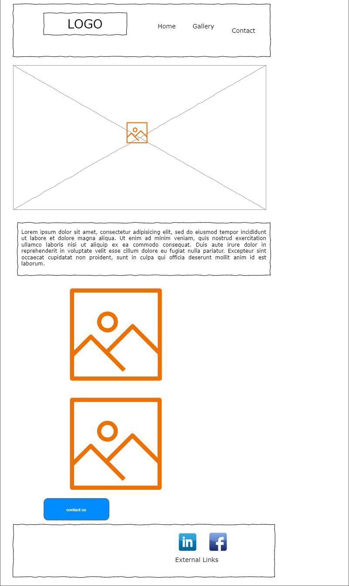
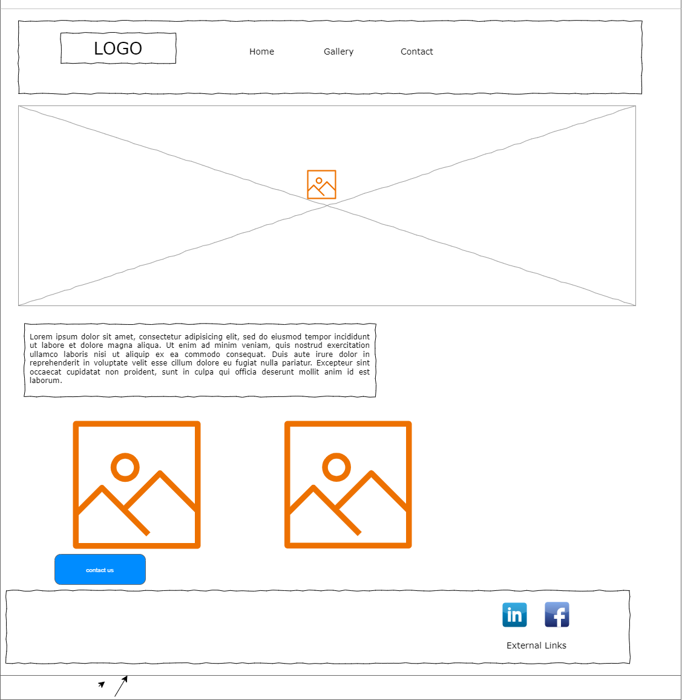

Site Plan for Photographism
Site Name
Photographism
The name combines "photography" and "graphic design," reflecting the creator's passion for both fields.
It highlights the artistic fusion of photography and design for a professional online presence.
Site Purpose
The Photographism website serves as a professional portfolio and business platform
showcasing photography services. It aims to attract potential clients by providing examples of high-quality
photography, an optimized gallery, and an easy way to inquire about services.
Scenarios
- Scenario 1: A visitor wants to know about photography services for corporate events.
- Scenario 2: A client is looking to book a portrait session for a special occasion.
Color Schema
- Primary Color: #0d3b66 (Used for header, footer, and navigation bar.)
- Accent Color: #F4D35E (Used for button hover and call-to-action elements.)
- Neutral Light Color: #F6F7EB (Used for body background and sections.)
- Neutral Dark Color: #2C2C2C (Used for footer and text color.)
- Highlight Color: #EE964B (Used for key highlights and clickable elements.)
Typography
- Primary Font: Roboto (Google Fonts) - For headings and body text.
- Secondary Font: Lora (Google Fonts) - For accents like testimonials or photo captions.
Wireframe
Mobile View:

Desktop View:
